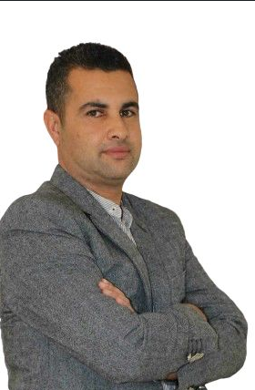
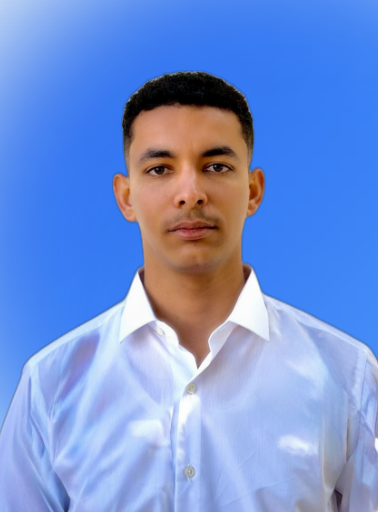

IEEE SB ESPRIM · Monastir · 2025
Beyond the Visible
An ideathon where students of all levels explore how AI can help real people notice a health problem before it becomes serious — in a simple, accessible, and human-centered way.
"How can AI help someone notice a health problem before it becomes serious — in a simple, accessible way?"
The world's largest technical professional organization — and the community behind this event.
IEEE — the Institute of Electrical and Electronics Engineers — is the world's largest technical professional organization, dedicated to advancing technology for the benefit of humanity.
Founded in 1963, IEEE brings together engineers, scientists, and professionals from over 160 countries. It publishes more than a third of the world's technical literature in electrical engineering, electronics, and computing, and organizes thousands of conferences and events globally each year.
IEEE SIGHT (Special Interest Group on Humanitarian Technology) is the IEEE branch dedicated to using engineering and technology to address humanitarian challenges — bridging the gap between technical innovation and real-world social impact.
IEEE SB ESPRIM is the Student Branch of IEEE at ESPRIM, Monastir. We organize technical workshops, hackathons, competitions, and community events to connect students with the global IEEE network and inspire a generation of engineers who build for good.
A glimpse into IEEE SB ESPRIM — our events, our team, our moments.
Two CEOs. Two angles on AI and health. One goal: help every team build something that matters.

CEO of CAREDIFY, a Tunisian startup innovating cardiac care through AI-powered wearable technologies. With a background in medical electronics and computing, and as founder of Medical-PRO, he brings a dual perspective — healthcare and tech-driven entrepreneurship — with a mission to make preventive cardiac diagnostics accessible across the MENA region.

Computer Engineer and CEO of KaTEK, specializing in Robotics, IoT, Embedded Systems, and AI-driven solutions. From mobile development to autonomous vehicles and edge AI, Kabil builds systems that exist in the physical world — not just on slides. His engineering mindset will challenge every team to think beyond the concept and into the actual mechanism of their solution.
Every team works through this 3-step framework during the workshop. Simple enough for first-year students. Deep enough for final-year engineers.
April 25, 2025 · ESPRIM, Monastir · Full day from 9:00 AM to 6:00 PM
Every pitch is evaluated on five criteria by a panel of three independent jurors. Here is exactly how scoring works and how winners are decided.
Each team has 3 minutes to pitch followed by 2 minutes of jury Q&A. Each juror scores independently on a private scoresheet. Scores are averaged only after all pitches are complete — not after each one — to prevent early bias. Total possible score: 100 points.